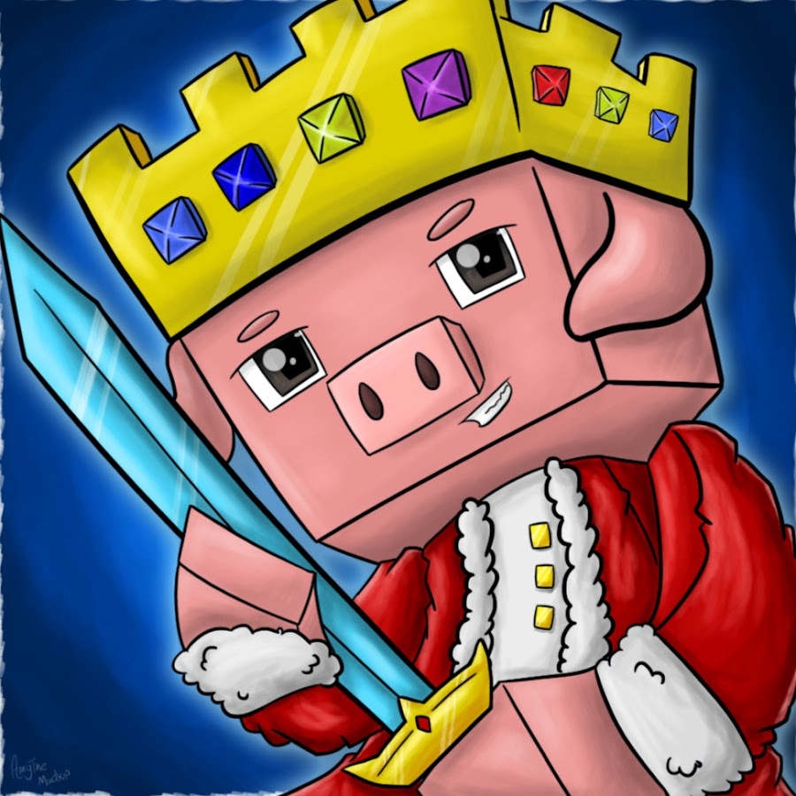

TECHNO THE "PIG"
JUNE 1999- 30 JUNE 2022
TECHNOBLADE NEVER DIES!!!!
Alexander (June 1, 1999 to June 2022) known online as Technoblade,was an American YouTuber and internet personality known for his Minecraft videos and livestreams on his YouTube channel and his involvement in the Dream SMP. Technoblade registered his main channel on YouTube in 2013. Its content focused on Minecraft gameplay, particularly on the minigame server Hypixel. After rising to popularity in 2019 for his performances in player versus player events, Technoblade was invited to the Dream SMP Minecraft server in 2020, further increasing his following. He is widely regarded by the game's community as one of the best Minecraft players.
Things he did
- Broke the minecraft skyblock record twice
- worked and planned the events in dream smp
- donated thousands of dollars for cancer treatement
want to know mode about him click herewikipedia